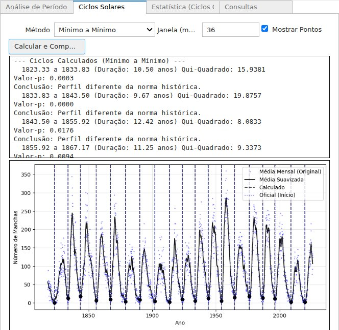

Análise de Ciclos Solares Nota 116,8
Notebook Jupyter interativo que analisa mais de 270 anos de dados de manchas solares do SILSO/SIDC: calcula a média suavizada de 13 meses, detecta os ciclos solares automaticamente e os compara com os ciclos oficiais usando testes t de Welch, Qui-Quadrado e Kolmogorov–Smirnov.